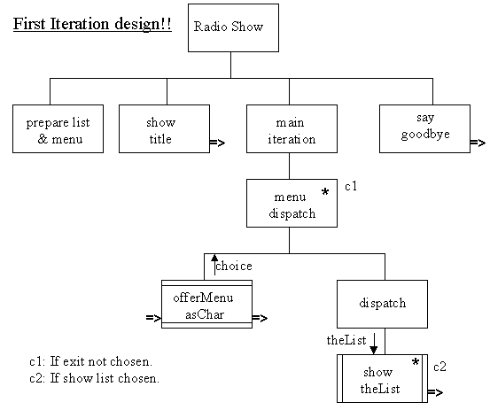

The high level design for the initial version of the application is as follows.

It shows that the RadioShow program (i.e. its main() method) commences by preparing the list and the main menu. It then shows the title of the program before entering the main iteration, after which it says goodbye before finishing.
The main iteration iterates a component called menu dispatch until the user indicates that they have finished with the program. Each iteration commences with a call of the offerMenuAsChar() method supplied by the main menu. This method returns the user's choice from the menu. The double horizontal lines indicate that it is being used by the program and so does not need to be designed and developed. The iteration continues with a component called dispatch which has a single option which is called if the user indicates that they want to list the slots. The double vertical lines indicate that this component is a method which has to be designed and constructed in this project and that it will need to be given theList which it is to show.
This design can be validated at this stage by running through it imaging that the user will ask to list the slots and will then indicate that they want to finish the program. On the first iteration c2 will be true and so the slots will be listed. Condition 1 c1 will be false and so the main loop will go around again. This time c2 will be false, so the slots will not be listed, and c1 will be true so the iteration will finish. The program will then say goodbye before finishing.